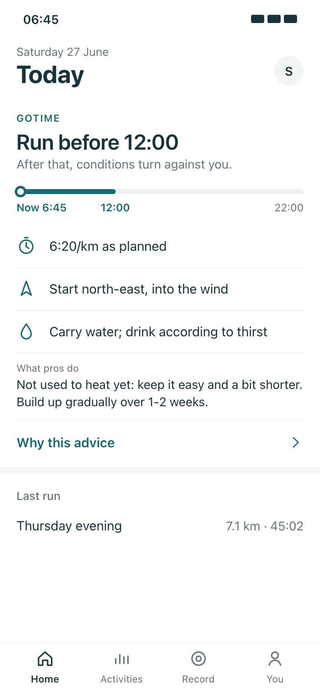
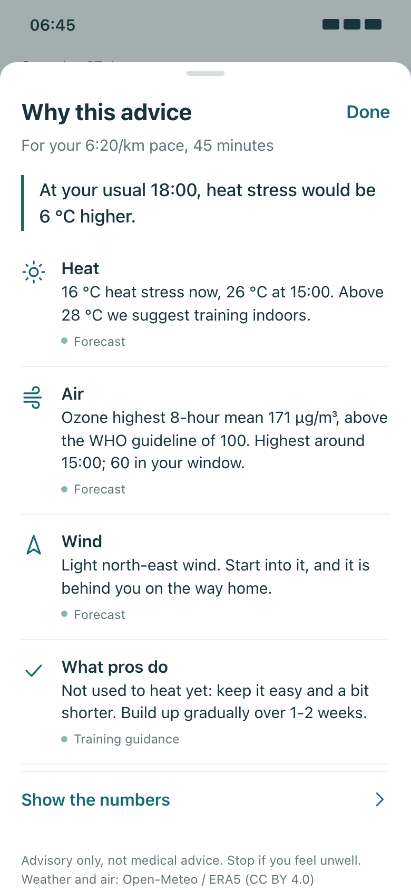

GOTime · Our first working prototype
Sanne has an evening run in mind. Her app suggests going before noon.
GOTime starts with her planned activity and considers the heat and air-quality conditions ahead. It gives her a next step in the activity app she already uses, with the reasons close by when she wants them.
Sanne and Stride, the activity app, are fictional. The demo uses stored example conditions, not a live forecast.

One person · One day
The suggestion fits the plan she actually made
Sanne usually runs at 18:00. On this example day, the app suggests running before 12:00. She sees the answer first, then decides whether to change her plan.
She has a plan A 45-minute run is already part of her day. GOTime meets her in her activity app.
She sees a window The recommendation points to a period that fits the whole run, rather than a single favourable hour.
She can ask why The app shows which conditions shaped that suggestion. The decision is still hers.
A day view for this example
The highlighted period fits her planned run. Her usual 18:00 slot is the comparison point.
A GO signal is useful only when a suitable window exists. In another example, the advice may be to ease off or change today's plan.
Illustrative website view based on a stored scenario, not an automatic live alert
The reason behind the answer
She can see what changed
In this stored example, the explanation compares heat stress at her usual evening time with the earlier window. It also shows the air-quality and wind information used for the suggestion.
This is where a partner app can do more than display readings. It can show an answer first, then let someone inspect the conditions behind it.
Explore Why this advice ↗Another illustrative case · Chennai
The same morning need not lead to the same advice
The prototype can respond differently when the person and their planned run change, even when the outdoor conditions are the same.
Arjun · used to the heatGo before 7:00. Go easy.
Sanne · visiting runnerTrain indoors today.
Stored examples for discussion, not live recommendations or individual health assessmentsFor wellness platforms
The answer belongs inside your product
The prototype recommendation engine has a documented API contract. The partner decides where a planning answer fits and how to present it in the voice of their app.
The plan the person is making
Heat and air-quality context for that plan
Shown where they already decide what to do
The API works locally as a prototype. Hosting, partner access and broader validation are still in development.
Science and transparency
What the answer draws on
GOTime draws on air-quality and heat research, then considers the activity and its setting. The prototype also accepts inputs such as pollen. Forecast-based guidance and experimental body estimates are treated separately in the development work.
Read about the science ↗GOTime provides general information for planning outdoor activity. It is not medical advice or an assessment of individual health risk.